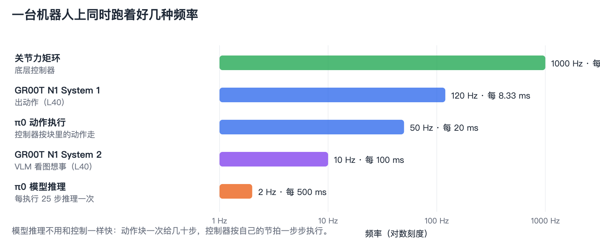

第 1 章 · 机器人上的推理：和云上有什么不同
本地运行
git clone https://github.com/wikieden/robot-edge-inference
cd robot-edge-inference/code/notebooks
pip install jupyterlab torch numpy
jupyter lab ch01_robot_constraints.ipynb也可以下载后直接用 VS Code 打开 .ipynb 运行。需要 GPU 的章节在 Colab 里选「代码执行程序 → 更改运行时类型 → GPU」。
本章回答：同一个模型，放在机器人身上跑和放在数据中心跑，要操心的事情有什么不一样？"推理要多快"这个要求是从哪里来的？
编写日期：2026-11-26 · 下一章：第 2 章 端侧芯片
对应原文：vla-deep-dive/materials/text/papers/pi0-2410.24164.txt§IV L255（H = 50）、L938–L940（50 Hz 机器人每 0.5 s 推理一次）、Table I L942–L951（RTX 4090 耗时分解）；gr00t-n1-2503.14734.txtL78–L89（System 2 10 Hz、System 1 120 Hz）
本章缩写：VLA = Vision-Language-Action（视觉 / 语言 / 动作，看图听指令出动作的模型）· VLM = Vision-Language Model（视觉 / 语言 / 模型）· Hz = Hertz（赫兹，每秒多少次）· ms = millisecond（毫秒）· GPU = Graphics Processing Unit（图形 / 处理 / 单元）· RTX 4090 = NVIDIA 的消费级显卡型号 · L40 = NVIDIA 的数据中心显卡型号 · batch = 一批一起算的请求。全部缩写见附录 · 缩写与术语表
讲解
第一步：云上和机器人上，操心的事不一样（2026-11-26）
类比：食堂和便当。 数据中心像大食堂：灶多、电足、几百个人的饭一锅炒，追求的是一小时出多少份。机器人像随身带的便当：只给一个人吃，盒子就这么大，饭必须在饿之前热好，路上还可能没有微波炉。
| 数据中心（云） | 机器人（端侧） | |
|---|---|---|
| 一次算几个请求 | 几十上百个凑一批，一起算 | 只有 1 个：一台机器人、一个观测 |
| 追求什么 | 吞吐：每秒总共出多少 token | 时限：这一次必须在多少 ms 内回来 |
| 能用多少电 | 一张卡几百瓦，机房供电散热 | 整个计算模组 15–130 W（Jetson 系列，第 2 章），还要和电机抢电池 |
| 断网怎么办 | 机房内网，基本不断 | 机器人会走到信号差的地方，必须能自己活下去 |
| 算错一次的后果 | 用户等一会儿、重试 | 机械臂撞到东西、机器人摔倒 |
这四行分别对应本书后面几章：一次只算 1 个请求，决定了速度主要被内存带宽卡住（第 3 章）；时限决定了要做调度（第 6 章）；功率和断网决定了端云分工（第 7 章）。
一句话：云上追求一锅炒得多，机器人上追求一份饭准时热好、不出事。
第二步：时限从哪里来：控制节拍和动作块（2026-11-26）
类比：跳绳。 摇绳的人（控制器）每 20 ms 必须摇一下，节拍不能停。教练（模型）不用每摇一下都喊口令，而是一次告诉你接下来 50 下怎么跳。教练只要在你跳完这一串之前想好下一串就行。
机器人上同时跑着好几种频率（Hz 是每秒多少次，周期 = 1000 ÷ 频率 ms）：

- 控制器按固定节拍发动作。π0 用的机器人是 50 Hz，周期 \(1000 \div 50 = 20\) ms。
- 模型一次不是出 1 个动作，而是出一整块，叫动作块（action chunk）。π0 一块是 \(H = 50\) 步（L255），\(H\) 读作"H"，是 horizon（视野）的首字母，意思是一次往前规划多少步。
- π0 在 50 Hz 的机器人上每执行 25 步推理一次（L938–L940）：两次推理之间隔 \(25 \times 20 = 500\) ms，推理频率只有 \(1000 \div 500 = 2\) Hz，控制频率仍是 50 Hz。
时限就是这样来的：下一块动作必须在当前这块用完之前回来。π0 每 500 ms 要一次新动作块，推理就得明显快于 500 ms。
例子：π0 在 RTX 4090 上的耗时分解（论文 Table I，L942–L951，3 路相机）：
| 部分 | 耗时 |
|---|---|
| 图像编码（3 张图） | 14 ms |
| 观测前向（图像 + 文字过一遍语言模型） | 32 ms |
| 10 步 flow 出动作 | 27 ms |
| 板上合计 | 73 ms |
| 放到板外、走 Wi‑Fi 多出的网络 | 13 ms |
| 板外合计 | 86 ms |
73 ms 只占 500 ms 间隔的 \(73 \div 500 = 14.6\%\)。在 4090 上很宽裕；换到功率小十倍的机载板子上会怎样，就是第 3、8 章要算的事。
另一种做法：快慢两套系统。 GR00T N1 把模型拆成两块（L78–L89）：看图想事的 VLM（System 2）在 L40 上 10 Hz，每 100 ms 一次；出动作的部分（System 1）120 Hz，每 8.33 ms 一次。慢的那块想"做什么"，快的那块管"怎么动"，第 6 章细讲。
一句话：控制器要准时，模型用动作块一次给很多步来换时间；推理只要赶在这一块用完之前回来。
第三步：一次只有 1 个请求，意味着什么（2026-11-26）
类比：拉货的卡车。 数据中心一次拉几十箱货（batch 很大），跑一趟的油钱（把权重从内存读出来）摊给很多箱。机器人一次只拉 1 箱，油钱一分不少，全算在这一箱上。
模型每生成一步，都要把权重从内存读一遍。batch = 1 时，读权重的时间没有人分摊，于是内存带宽（每秒能读多少 GB）往往比算力更早成为瓶颈。这正是《深入理解 AI Infra》第 1 章算单 token 账的那套方法（AII §1.3），第 3 章会把它用到 VLA 上。
一句话：机器人上 batch 永远是 1，权重读一遍的时间没人分摊，带宽是第一个要算的数。
第四步：功率、散热和"断网也要活"（2026-11-26）
- 功率：整个计算模组只有 15–130 W（第 2 章的 Jetson 系列），而且和电机共用一块电池（第 7 章算续航）。
- 散热：机器人外壳里风道小，板子热了会自动降频，推理就变慢。测时延要在热稳定之后测（第 7 章）。
- 断网：π0 论文里移动机器人的推理是放在板外、走 Wi‑Fi 做的（L921–L923），平均只多 13 ms。但网络会抖、会断，控制和安全相关的部分必须留在机器人上（第 7 章）。
- 安全：推理超时或出错时，要有兜底：停稳、保持当前姿态、回安全位。这部分在机器人软硬件架构第 10 章细讲。
一句话：电有限、热会降频、网会断，这三件事在数据中心几乎不用想，在机器人上每件都要提前设计。
动画演示：控制 50 Hz，推理只要 2 Hz

可交互版：animations/01-robot-constraints.html（滑块：一次推理要多少 ms）
怎么看：
- 绿点是控制器每 20 ms 发的一个动作（第二步）；
- 蓝条是一个动作块，50 步够走 1000 ms（第二步）；
- 虚线处执行到第 25 步，橙条是一次推理，73 ms 只占 500 ms 的 14.6%（第二步）；
- 紫色是放到板外多出的 13 ms 网络（第四步）；
- 拖滑块：推理超过 500 ms 时条变红，下一块动作来不及。
练习与作答记录
题 1（第二步 时限）：一台机器人控制频率 30 Hz，模型一次给 30 步动作，每执行 15 步推理一次，一次推理 120 ms。（a）两次推理之间隔多少 ms？（b）推理占这段间隔的百分之几？
作答：（待作答）
题 2（第一、三步）：同一个模型，在数据中心一次算 64 个请求，在机器人上一次算 1 个。读一遍权重的时间，分到每个请求头上，两边差几倍？
作答：（待作答）
题 3（第四步）：说出两个"数据中心几乎不用操心、机器人上必须提前设计"的问题，各举一个后果。
作答：（待作答）
口诀
云上一锅炒得多，车上一份要准时；
动作成块换时间，块没用完就回来；
批量为一没人摊，带宽先算别忘掉；
电热网断都要想，出错先要能停好。
本章复习卡片
E01（周期与推理间隔怎么算）、E02（π0 在 4090 上的耗时分解）
附录 · 延伸阅读
留给以后深入学习用，不影响本章主线。★ 是建议先读的。
推荐阅读
| 读什么 | 读哪里 | 读它为了什么 |
|---|---|---|
| ★ π0 论文 | vla-deep-dive/materials/text/papers/pi0-2410.24164.txt Table I L942–L951、L918–L940 |
一个真实 VLA 的耗时分解和推理节拍 |
| ★ VLA 讲义 · 动作分块 | vla-deep-dive 第 3 章 | 动作块为什么能换来时间 |
| GR00T N1 论文 | vla-deep-dive/materials/text/papers/gr00t-n1-2503.14734.txt L78–L89 |
快慢两套系统的频率 |
| 机器人软硬件架构 · 分层闭环 | robot-system-architecture 第 1 章 | 各层频率为什么每往下一层快约 10 倍 |
| 《深入理解 AI Infra》第 12 章 | ai-infra/materials/ai-infra-book/manuscripts/12-端边云协同.md §12.1.5 |
手机上的同类算法，本书第 3 章会用到 |
数学原理
- 频率和周期互为倒数：周期（ms）= 1000 ÷ 频率（Hz）。50 Hz ↔ 20 ms，120 Hz ↔ 8.33 ms。
- 占比：推理时间 ÷ 推理间隔，表示这段时间里有几成在等模型。
公式清单
| 公式 | 意思 |
|---|---|
| \(T = 1000 / f\) | 频率 \(f\)（Hz）对应的周期 \(T\)（ms） |
| 推理间隔 \(= s \times T\) | 每执行 \(s\) 步推理一次 |
| 占比 \(=\) 推理时间 \(\div\) 推理间隔 | 推理占了这段时间的几成 |
代码对照：把本章的数字用代码算一遍
纯 Python，不需要安装任何库。代码在仓库本地
ai-infra-edge/solutions/chapter-code/ch01_robot_constraints.py，配套测试tests/test_chapters.py::test_ch01，notebook 在notebooks/ch01_robot_constraints.ipynb。Mac 上直接能跑，不需要 GPU：
bash cd ai-infra-edge/solutions/chapter-code uv run python ch01_robot_constraints.py # 一步一步打印 uv run pytest tests/test_chapters.py -k ch01
讲义 ↔ 代码（π0 的数字来自论文 Table I，GR00T N1 的频率来自论文 §2）：
| 讲义 | 公式 | 写法 | 跑出来 |
|---|---|---|---|
| 第二步 π0 耗时分解 | 三段相加 | sum(PI0_PARTS_MS.values()) |
73 ms；板外 86 ms |
| 第二步 控制周期 | \(1000 / 50\) | period_ms(50) |
20 ms |
| 第二步 推理间隔 | \(25 \times 20\) | infer_interval_ms(25, 50) |
500 ms → 2 Hz |
| 第二步 推理占比 | \(73 / 500\) | busy_fraction(73, 500) |
14.6% |
| 第二步 GR00T N1 System 1 | \(1000 / 120\) | period_ms(120) |
8.33 ms |
关键几行：
def period_ms(hz):
return 1000.0 / hz # 每秒 hz 次 → 每次隔 1000 / hz 毫秒
def infer_interval_ms(steps_between, control_hz):
return steps_between * period_ms(control_hz) # 执行完这么多步才推理下一次
代码里才看得到的 2 件事：
- 单位统一用毫秒：频率进来先换成周期，后面全部是 ms 相加相除，不容易错。
- 论文 Table I 是在 RTX 4090 上测的，不是在机器人的机载板子上；搬到 Jetson 上会慢好几倍，第 3、8 章再算。
自己改一改（不影响练习答案）：
- 把控制频率改成 100 Hz，看推理间隔和占比怎么变。
- 把
PI0_PARTS_MS里 10 步 flow 的 27 ms 减半（假设只用 5 步），看板上合计变成多少。